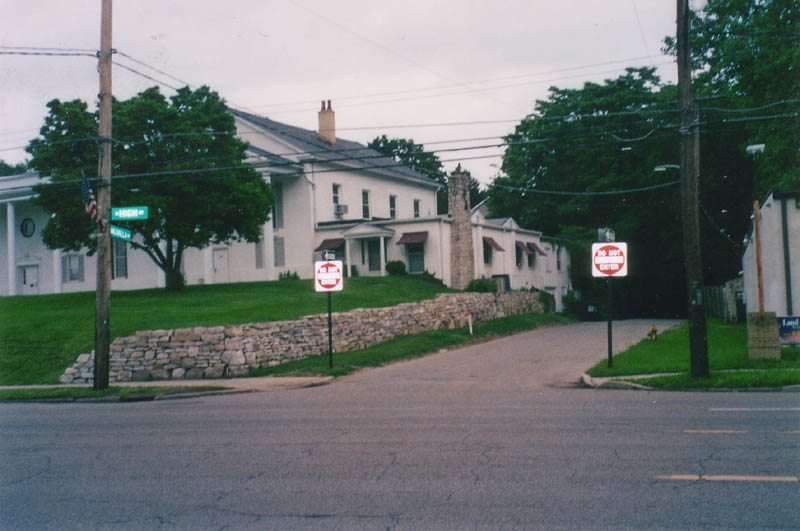
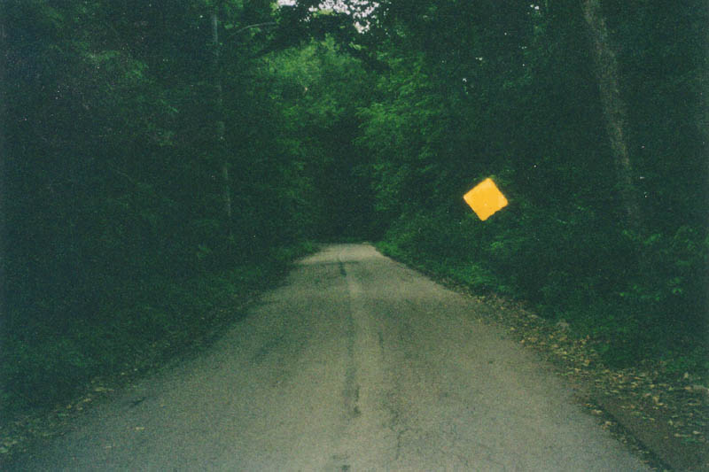
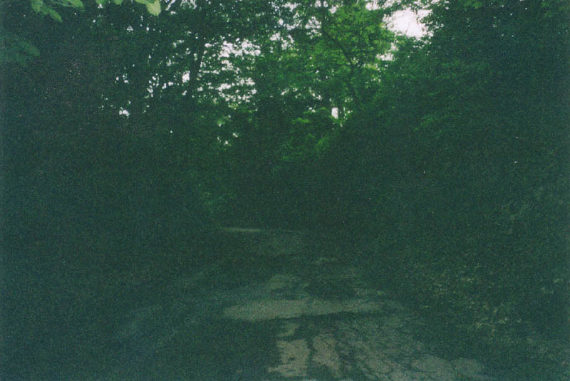
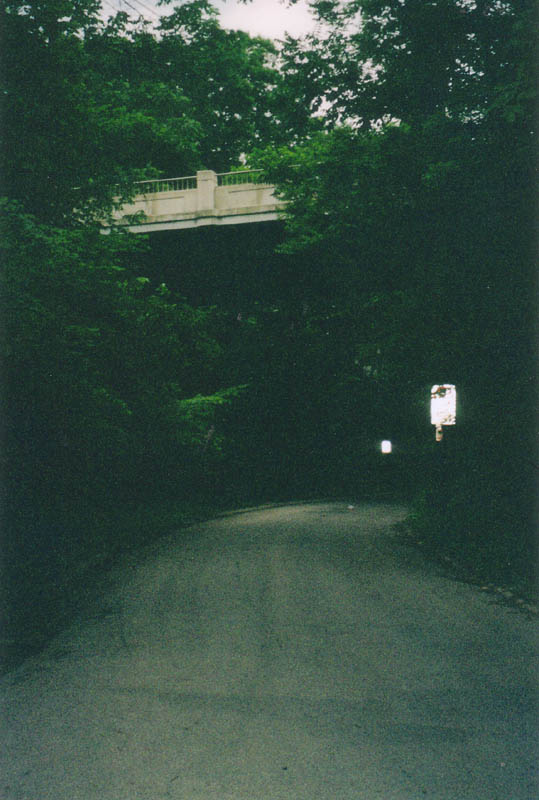
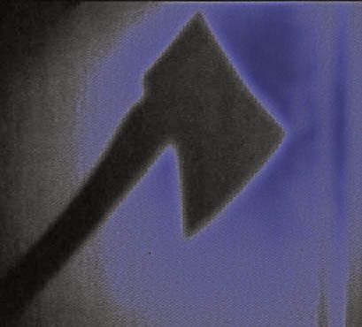
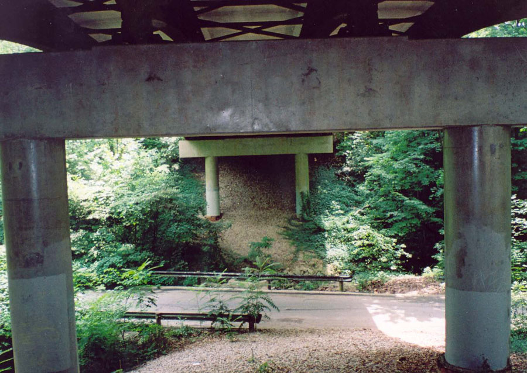

Mooney's Mansion and Walhalla Road
The road known as Walhalla occupies a unique geographical niche in north Columbus, which is for the most part as flat and unremarkable as any other part of the glacier-packed central Ohio plain. Most side roads on the OSU campus and in Clintonville follow a right-angle grid pattern, and even when they don't, they at least stay sensibly level with the other roads in the area.

That's what makes the Walhalla region special. Between North Broadway and Weber, the blocks bordered by North High Street and Indianola become quite hilly. Houses stand high atop ridges with backyards that slope down into a wooded creekbed, carpeted with a thick layer of dead leaves. Roads criscross each other, above and below. And tunneling through at the lowest part of the nearly undevelopable "holler" region is Walhalla Road.

Walhalla traverses about a mile-long shady tunnel where the sun never reaches much, thanks to the canopy of tree branches high overhead. These photos were taken during the day and they barely turned out. There is no berm at the side of the road, because it's all been washed out by a little creek that flows down here beside the road. Looking up, the road is flanked by extremely steep embankments covered with leaves. It's difficult to remember that you're in the middle of a large city and not in some backwoods West Virginia holler. The frequent yuppie joggers help.

Speaking of yuppie joggers, it's worth noting that a piece of city land as unique as Walhalla has not gone unnoticed by the folks who deal in real estate. There's a reason for all those anti-crime streetlights which light things up so eerily at night. The houses, with one or two exceptions, don't have Walhalla Road as their address--though the ones that do are pretty interesting places, built up against the hill with garages beneath the ground floor. Mostly they're up above, with addresses on some of the streets that coast along the edge or even cross over the canyon. Their back doors face Walhalla, and they often have rarely-used flagstone staircases descending through the trees to the road. And these are nice houses--some of the nicest Clintonville has to offer tenured professors and other mid-life professionals. Is one of them Mooney's Mansion?

You'll notice that I don't really have a picture of Mooney's Mansion on this page. That's because it's existence is far from an established fact, no matter what the legends say.
And the legends say a lot of different things. The basic theme seems to be this: A Dr. Mooney lived with his wife and children in one of the homes high atop Walhalla sometime in the 1950s. When his slow descent into madness passed its boiling point, he chopped every member of his family up with an axe. Whether he killed himself, was caught, or made an escape is not known, but the murderous act is supposed to be reenacted nightly, bathed in a cold blue glow and visible through the windows of Mooney's Mansion.

Another popular variant has Mooney losing everything in the 1929 stock market crash and killing his wife and kids in their beds, then hanging their bodies from the bridge over Walhalla before shooting himself in the attic of his house. It seems like a lot of work for a depressed person to do, but hey, who knows? In this version, the blue light is always on in the attic of his old house, which might even be occupied. A reversal of this version is sometimes given, with Mooney himself hanging from the bridge and his family taking the bullets in the house.
One confident, reasonably competent-sounding report I received recently says that Mooney's Mansion is the house located at 259 Walhalla Road, closer to Indianola than High.

Another, more absurdist variant has Mooney kicking his wife's severed head down the hill to Walhalla Road--an act which you can see repeated with a phantom head if you climb the right back staircase and knock on the door of the now-abandoned (or so they say) Mooney place. My friend Elvis and I tried this and discovered that A. no severed head bounced down after us, and B. the house we picked wasn't abandoned. Nor was there a lifesized statue in the back yard of a woman, which will bleed in all the places where the wife received axe blows. Others say the hangers from the Calumet bridge aren't the Mooney family at all, but are the ghosts of women raped and murdered in the isolated hollow over the years. Perhaps their sad cases account for all the safety lights.
The following account was sent to me by a website visitor:
I had a freaky experience one night on Walhalla Rd. In 1987, I was working at a convenience store on High Street near Walhalla. I got off work one morning at 5AM. I had to walk to Indianola to catch a bus. I was walking on Walhalla when I heard something moving in the brush to my left. I stopped and looked around and saw nothing. I started walking again and I heard something moving through the brush again. When I stopped, it stopped. I drew my knife and issued a challenge, but nothing answered. Whatever it was, it paced me all the way to Indianola. That was the last time I walked alone on Walhalla in the dark.
The real Mooney's Mansion may stand on Calumet just south of the bridge; I've heard that it's now lived in by new people. I've also heard that it's a big white house with a sculpted lion's head out back that will bleed on All Hallow's Eve. If you know more about the mansion, or the Walhalla Road hauntings in general, please write to me and tell me about it.
Ohio Exploration Society: Mooney's Mansion
Shadow Seekers: Walhalla Road
Back
forgottenohio@yahoo.com
{kind=link}
{kind=link}
{kind=link}
{kind=link}
{kind=link}
{kind=link}